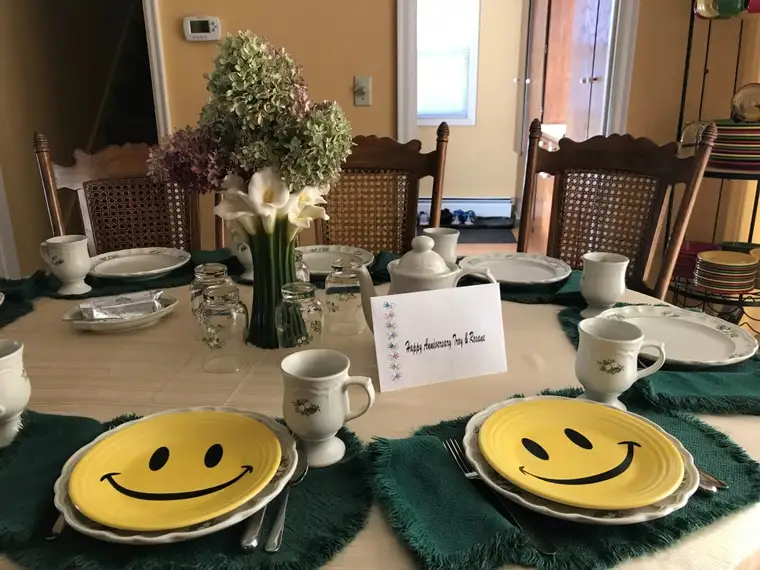
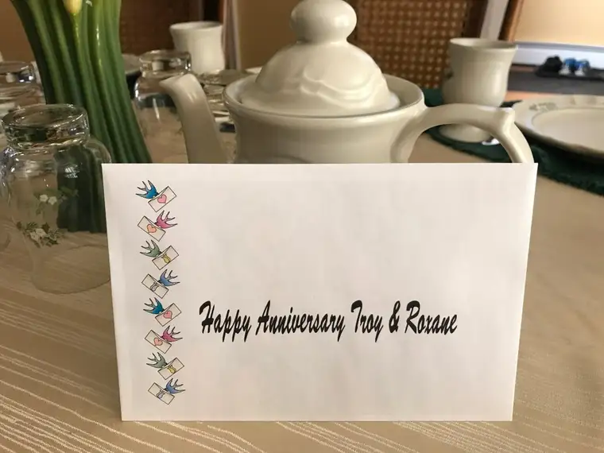
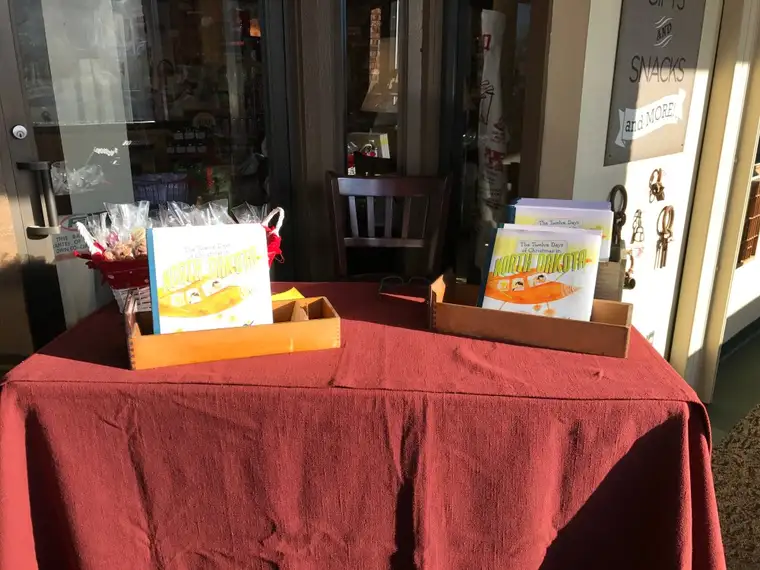
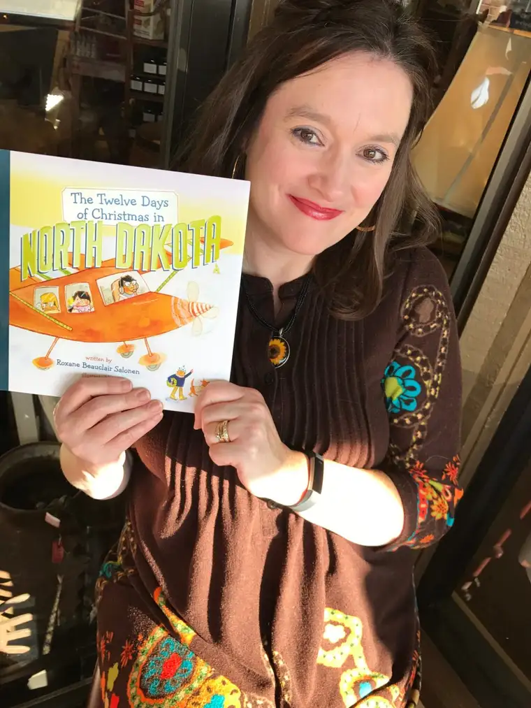
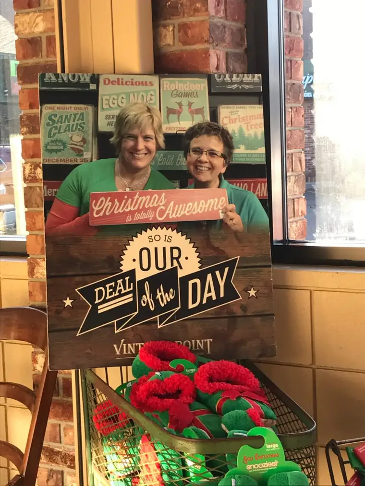

Gratitude – it’s something we focus on this time of year, and I’m so grateful we do. Becoming more grateful has gotten me through some jams in life. Several years ago, during a particularly despairing period, I started keeping a gratitude journal, and it made all the difference. Ever since then, I’ve tried to be very intentional about being thankful — to God most of all — every day. I try, when I remember (and I don’t always), to end my days with gratitude on my lips and in my heart.
This week, my husband and I celebrated 26 years of marriage, on Thanksgiving Day! I am grateful for the chance to gather with family over an abundant and delicious meal.

A beautiful reflection honoring marriage read by Troy’s mother began our circle of prayer around the table. This, followed with her careful planning of the setting to keep us in mind, and Troy’s father’s prayer of thanksgiving, touched me greatly.


I am grateful for my marriage, and the kids who have become part of our fold that began with just two crazy kids without a clue of what they were taking on.
I am grateful for our warm home, with a new furnace to keep us cozy, and fresh new paint, flooring and furniture to get us through the long winter ahead.
Soon, we will be going through a major test when my husband undergoes open-heart surgery. This sneaked up on us, and brought a fair amount of fear with it initially, but it’s made us lean all the more into our Lord’s steady, sure heart. I am grateful for His presence in our lives, which is especially comforting right now. I don’t know what we’d do without this faith to console us in uncertain times.
And in the midst of all this, my book launched, and there were moments I wondered about the timing. Suddenly all the work and excitement that had accompanied the research and writing and birth of this fun project seemed so unimportant next to my husband’s health. It was my dear and longtime friend Karla who pointed out how it might be a blessing in the middle of something difficult. And though I wasn’t sure, I tried to keep her words in sight, and indeed, it has become just as she predicted.
Though I still might not have chosen these things to coincide in such a way, I do see God’s hand in it all. I saw him loving me through friends who stopped by my book launch last weekend at Barnes and Noble, and I saw him in the sunshine that greeted me in the spot where I signed books this past weekend at the lovely variety store Vintage Point here in Fargo.


I saw him in the woman who stopped by with a book she’d already bought, and four more she wanted to buy, and have me sign, and how excited she was to have spotted “The Twelve Days of Christmas in North Dakota” on a Facebook post from Florida. I saw God again in the two ladies who’d never heard of the book, but opened it up and started reminiscing about their own lives in North Dakota, and the excitement of thinking of giving the book to their grandchildren for Christmas. I saw him in the workers of Vintage Point, who brought me samples of chocolate-covered cherries and gingerbread popcorn, and asked how my husband is doing.

God is truly everywhere, ready to accompany us, wanting to give us hope, so that we can give it to others. What a joy it is to have this great commission. What a wonderful thing to know the living God — to be blessed with the knowledge that he is alive and wants to lead us — and others with us — into his eternally welcoming arms.
God also put me in touch with my friend Cindy, years ago, when my first two children’s books, “First Salmon” and “P is for Peace Garden,” were making a splash. Back then we were business acquaintances, but now, we are friends who share a lively faith as well as a love for books and North Dakota.
Cindy was in charge of putting my upcoming book event together, and I am ever so grateful.
The event will happen Tuesday, Dec. 12, while my husband is recovering from surgery, and I’m sure it will provide a nice reprieve from the nursing I’m about to become immersed in (though I am honored to care for my husband during this fragile time). So, off I will go that evening to share about how “The Twelve Days of Christmas in North Dakota,” got its start. This will be my first public presentation about the book, and I really am looking forward to introducing Henry, Piper and Marty and Meadowlark and their “great North Dakota adventure.” If you’re in the area, please come! If you know someone from the area who can, please tell them about this event.
Gratitude fills my heart right now, despite the still lingering worry about what our family is going to experience in the coming days. I would love a prayer for my hubby’s surgery on Dec. 6 — the Feast of St. Nicholas — that he would feel peace, that we would see God’s will in each moment, and for a successful outcome.
Q4U: When did you discover gratitude during a difficult time?